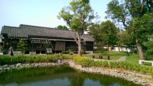
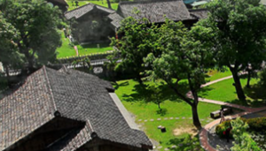
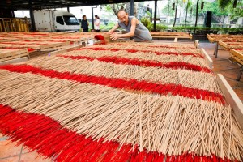
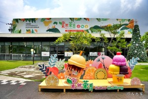
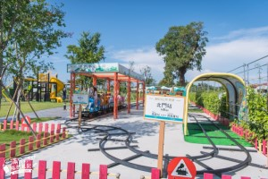

| 檜意森活村｜新港香藝文化園區｜果然茶香觀光工廠 | |
| 檜意森活村 | |
阿里山，不僅以壯闊優美的景色享譽全球，更因擁有豐富的森林物產，造就嘉義市成為林業之都的美譽。一條阿里山鐵路，牽引出了一段林業故事的風華起落。待繁華落盡後，沉澱下來的則是一幕幕的回憶。檜町，如今的檜意森活村，成為了這段歷史的見證，回憶的背景。 資料來源：檜意森活村官網 |
|
|  |  |
| 新港香藝文化園區 | |
最早傳統家庭工廠的年代叫「新興製香廠」，就跟大多數人創業起步一樣艱辛，即使一開始訂單少得可憐，但陳家人仍是兢兢業業地用心做好每一盤環香，也逐漸受到客人的肯定。2004年起一家人，埋頭摸索研究，想破頭、沒資金、累到病倒了，也阻止不了成立香藝的信念，就憑著這股傻勁和熱情，全台唯一以「香」為主題的「新港香藝文化館」終於在2008年正式開幕，將傳統製香業帶入香藝文化的全新境界，並列入行政院文化建設委員會地方文化館系列。 |
|
|  | |
| 果然茶香觀光工廠 | |
嘉義縣中埔鄉或許對許多人來說並不太熟悉，但提到阿里山絕對是眾所周知的名勝。而果然茶香就座落於前往阿里山必經之路的一個觀光園區。以水果之王-芭樂為主題的「果然」茶香，在園區內種植的珍珠芭樂品種，果型碩大、肉厚、口感帶脆，深受大眾喜愛。遊客來到果然茶香可搭乘遊園車環繞園區，園區會因應不同季節種植蓮花、太陽花等花種，營造世外桃源的氛圍。 |
|
|  |  |